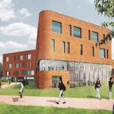
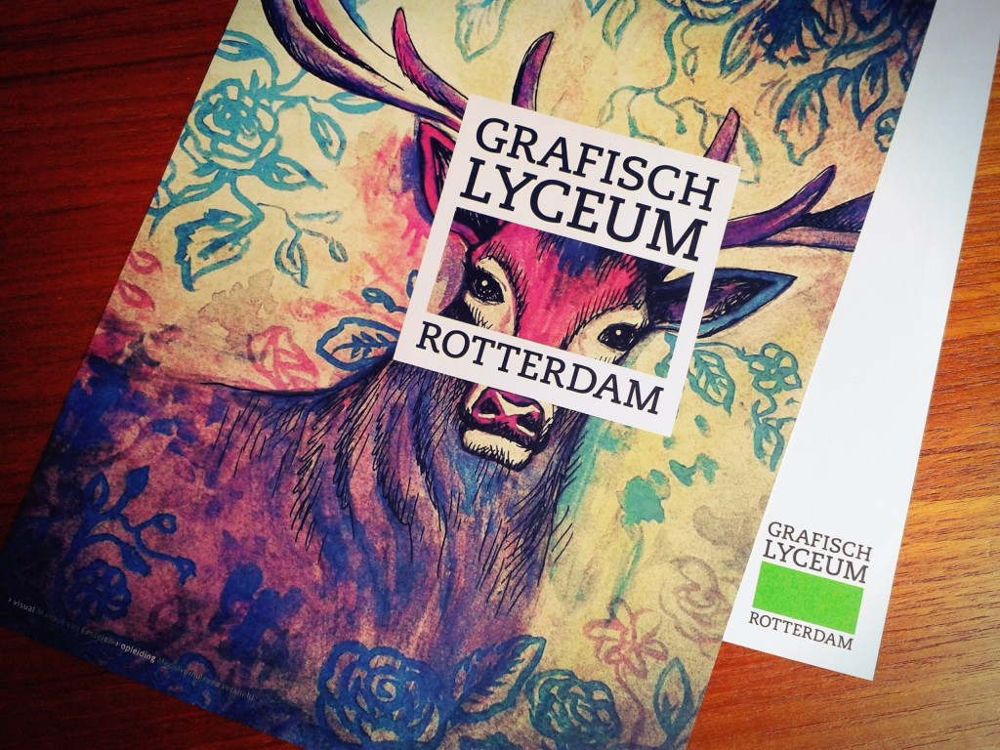

Calvijn Groene Hart
Is de middelbare school waar ik mijn mavo heb kunnen volgen
Het is een fantastische school ik heb er veel mogen leren, waar je natuurlijk als jongen knul totaal
geen zin in hebt, maar ben blij met de tijd die ik daar heb doorgebracht en de structuur die ze mij als
middelbare scholier hebben kunnen geven.
Het VMBO-TL heb ik in 4 jaar afgerond, met een examen
gemiddelde +/- 7.

Grafisch Lyceum Rotterdam
Is waar ik op dit moment mijn eerste studie volg.
ik vind het web development deel van deze opleiding het meest interessante en leukste wat je hier kan volgen
er zijn ook genoeg vakken die me niet liggen maar waar ik wel me beste beentje voor bij heb staan zoals,javascript & c# dat zal namelijk ook wel moeten voor deze programmeer talen.
Als ik hier weg ben wil ik full control hebben over HTML5 & CSS3 en wil Javascript en PHP goed snappen en er mee kunnen werken.
Vervolg Study
Als ik een vervolg opleiding zal nemen ben ik alweer 19. en daar zal ik dan 3&4 jaar overdoen voor dat ik dan kan beginnen met werken ben ik dus all 23
Ik zou nog niet weten waar ik een vervolg opleiding zal volgen maar ik hou het zeker in mijn achterhoofd!